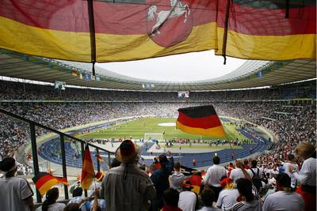

当政治战胜艺术；当东道主依然东道主般神奇；当那忧郁的蓝宿命地被那冷酷的白吞没；当最牛的乌鸦、最牛的嘴，那比霸王枪、碧玉刀、长生剑、多情环、离别钩、拳头、孔雀翎还要有效的武器史无前例地失效；这一晚，就这样被历史地耻辱着。
当政治被需要，连那东亚足球小国都可以四强一番，这拥有无数荣誉和传统的德意志，又怎能止步八强？当东道主的传奇里无聊地继续着不同国度同一版本的无聊故事，哪还要去考察其中具体的情节？当世界需要希特勒和墨索里尼的游戏，何必理会这游戏是否政治？当蓝的忧郁已被宿命，白的冷酷只不过为了最后的血。当最乌鸦的乌鸦都能变喜鹊，世界也将如此丑陋地沦陷在黑夜中。
两只从未在世界杯里点球失利的球队的终极PK，只不过是这丑陋剧本欲盖弥彰的一页。当那德国男人学着那波兰人在球门线上小丑般移动，利物浦那辉煌的胜利也就此蒙羞。马拉多纳1986年上帝之手的无耻已被1990年德国上帝之摔的更大无耻所偿还，而德国人其后16年的偿还大概还不够深刻，那就让新的无耻继续为新的偿还准备子弹。四年后的南非，当德国不再成为政治的理由，偿还将子弹般有力地洞穿黑夜的丑陋。
去问问法国、英格兰们吧，东道主的无耻是有后遗症的！东道主，出来混，都要还！且不说法国2002年的偿还笑话，更不说某东亚足球小国正进行的偿还绝不是仅仅4年就足够，就说德国人，也无须为1966年的门线再叨唠，英格兰已为那门线付出40年的代价，比它对瑞典的不举还要漫长。但40年还不是这偿还的终点，神奇的乌鸦已经宣布“英巴将相遇半决赛
”，没有了最无耻的政治，乌鸦仍会神奇。而德国，你要如英国病人般超越40年地成为德国病人吗？